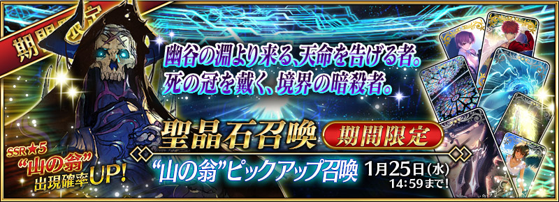
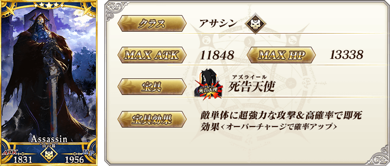
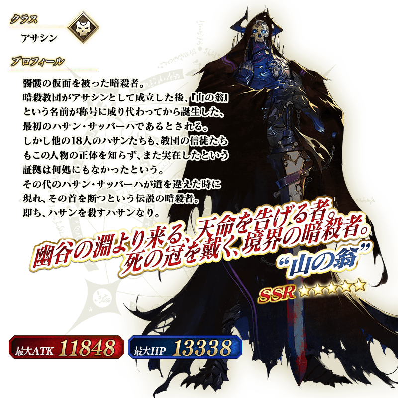

◆「“山之翁”Pick Up召喚」期間◆
期間：2017年1月11日(三) 16:00～1月25日(三) 13:59
以期間限定舉辦「“山之翁”Pick Up召喚」！
在聖晶石召喚初登場的Servant「★5(SSR) “山之翁”」以期間限定登場！
詳情請在聖晶石召喚畫面左下的召喚詳細確認。
※“山之翁”在Pick Up召喚結束後，不會追加到故事召喚。
Pick Up期間中，期間限定Servant的出現機率提升！
10次召喚中確定1張★4(SR)以上和確定1位★3(R)以上的Servant！
※確定★4(SR)以上包含Servant和概念禮裝。
※所謂「出現機率提升」意指比同稀有度的Servant及概念禮裝出現機率更高的設定。


※1/11(三)修正